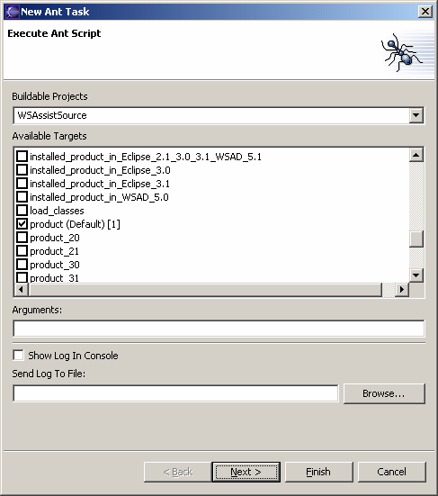

Schedule Ant Build To schedule a Ant build to be run at a specified time, open the scheduler view, right click to access the popup menu, select the "New" submenu, and then select "Ant Build". This opens the scheduler wizard so that Ant build may be configured. Any project containing a "build.xml" file will be listed. Once a project is selected, available build targets are displayed and may be selected. Arguments to the Ant build process may be specified, and the Ant build results may be either logged to the Ant console or to a file. Click the "Next >" button to schedule when the message is to be displayed. |